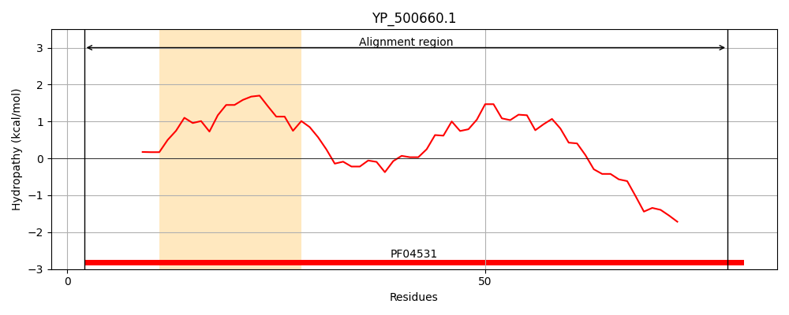
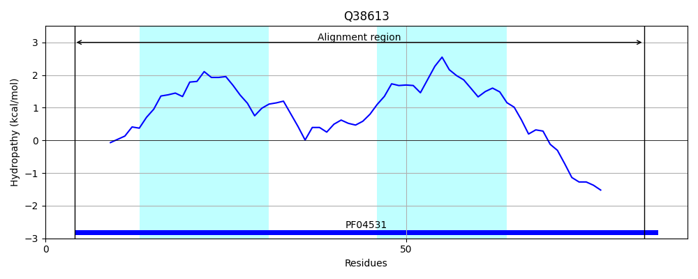
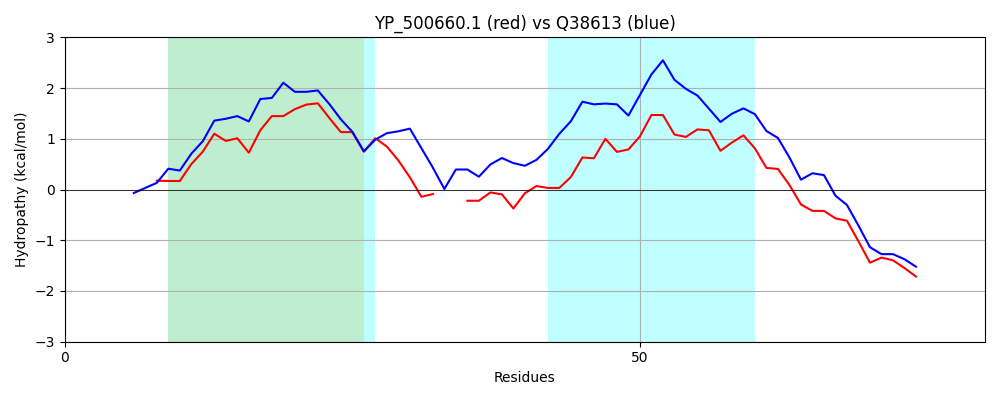

Hit Accession: Q38613
Hit TCID: 1.E.11.1.2
Hit Description: gnl|BL_ORD_ID|13401 gnl|TC-DB|Q38613|1.E.11.1.2 Holin - Lactococcus lactis bacteriophage Tuc2009.
Mach Len: 80
e:0.000000
Query TMS Count : 1
Hit TMS Count: 2
TMS-Overlap Score: 0.900000
Predicted Substrates:None
BLAST Alignment:
| Protein Hydropathy Plots: | |
|---|---|
|  |  |
Pairwise Alignment-Hydropathy Plot: | |
|  | |